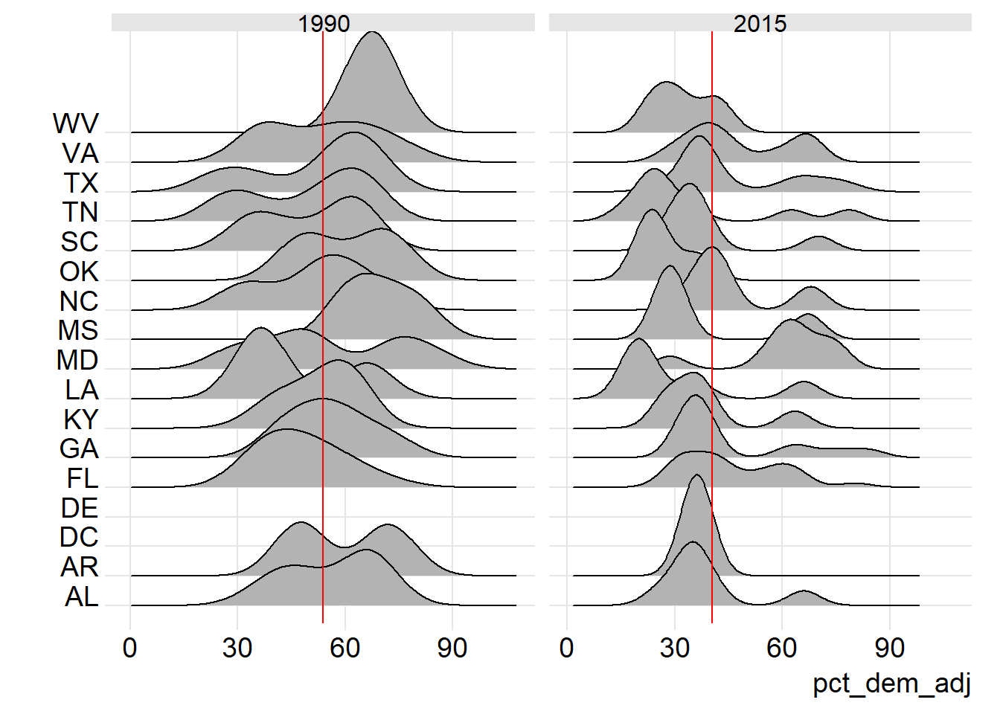
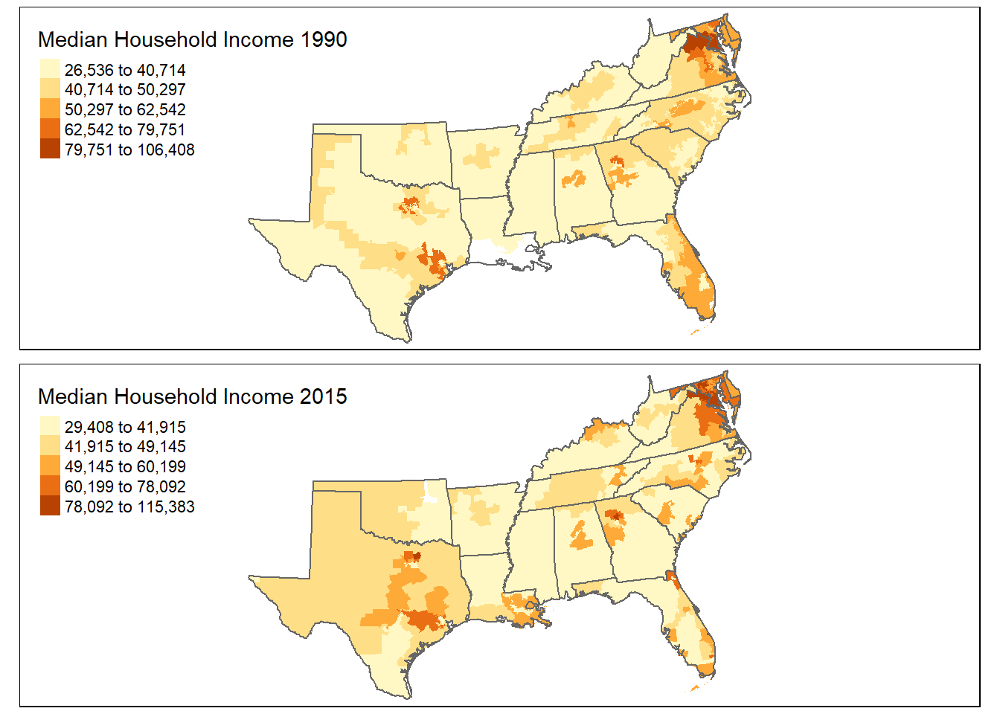

Chapter 2 Chapter template
2.1 Overview
(Write briefly about this region, listing the states included within it, the range of seats/districts for each state, and the general partisan landscape (lean Republican vs. Democratic).)
2.2 Descriptive analysis
(Include both ridge plots and maps here showing your independent variable. Interpret what both tell you. You may also want to include state median values/IQR to help describe the patterns you see.)
2.2.1 Percent not White, non-Hispanic
(Example code below. The echo and message parameters below keeps the code itself out of the document.) 
(Example code for maps below. Note that here the spatial data files needs to be loaded in a chunk with “include=FALSE” to surpress the loading message.)

2.2.2 Median household income
2.2.3 Percent with a bachelor’s degree
2.3 Models
(Include models for both years and scatterplots/fit lines. Interpret the coefficients and measures of model strength, focusing on direction, magnitude, and significance. Also look at the model residuals using density plots and maps as shown in the assignment.)
2.3.1 Percent not White, non-Hispanic
(Example code below for % Hispanic.)
(You can use stargazer to summarise both models.)
| Model results | ||
| Pct. voting democratic | ||
| 1992 | 2016 | |
| (1) | (2) | |
| hisp_pct | 0.648* | 0.532*** |
| (0.347) | (0.200) | |
| Constant | 50.676*** | 42.552*** |
| (1.586) | (1.911) | |
| Observations | 105 | 94 |
| R2 | 0.033 | 0.072 |
| Adjusted R2 | 0.023 | 0.062 |
| Residual Std. Error | 15.092 (df = 103) | 15.852 (df = 92) |
| F Statistic | 3.490* (df = 1; 103) | 7.107*** (df = 1; 92) |
| Note: | p<0.1; p<0.05; p<0.01 | |

(Interpret what the models and scatterplot tells you–focus on magnitude, direction and significant.)

(Does error in the residuals appear geographically and staistically random?)
2.3.2 Median household income
2.3.3 Percent with a bachelor’s degree
2.3.4 Multivariate models
(Run the model with your combined variables here and show results for each year using stargazer as shown above. Compare results to your indivdual models. Check for multicollinearity using VIF and a correlation matrix if necessary. Use the BP test to check for heteroskedasticity.)
2.4 Summary
(What did this analysis tell you about the research questions: the relationship between your variables and voting patterns and changes in this relationship across time periods?)